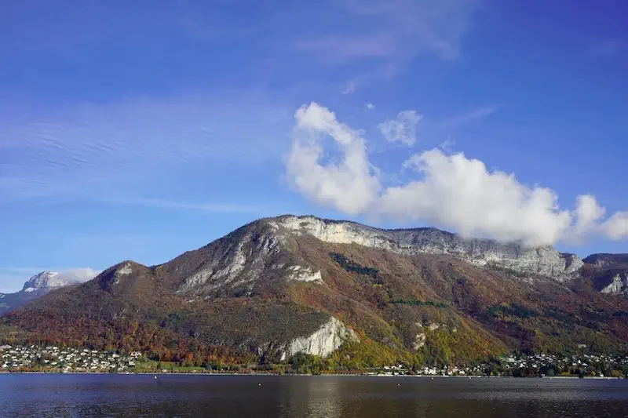
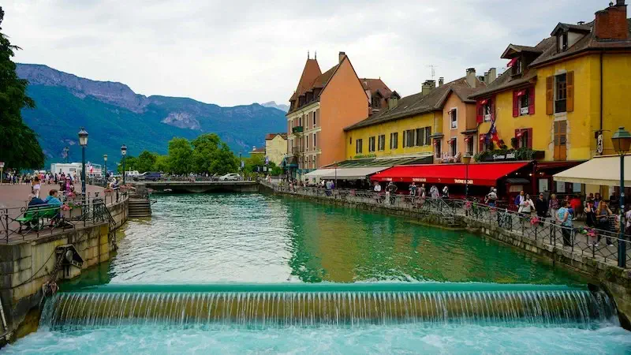
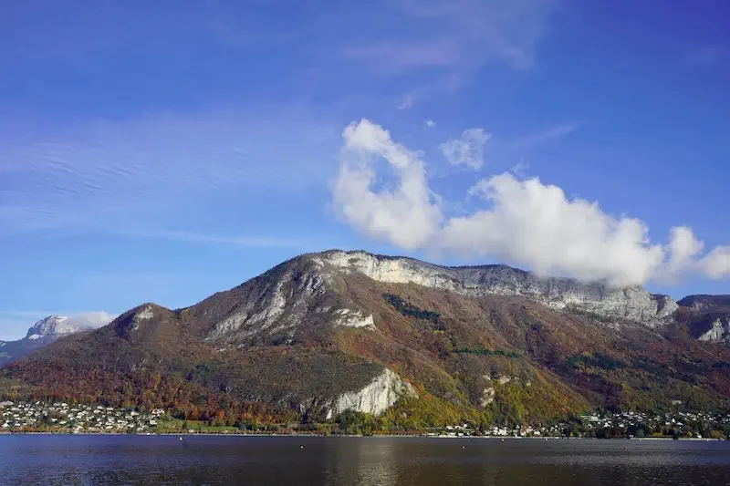
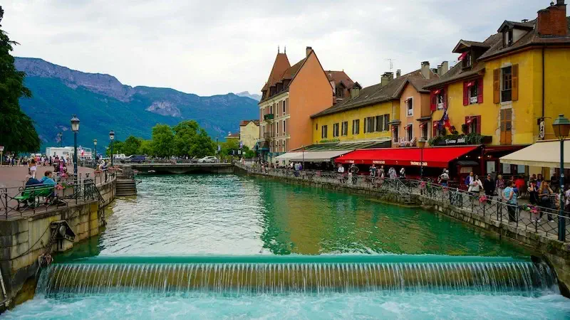
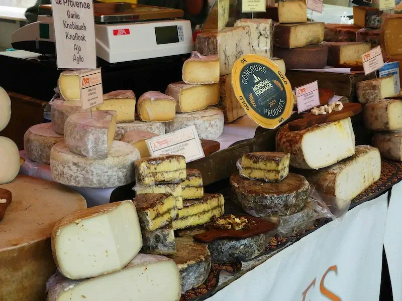
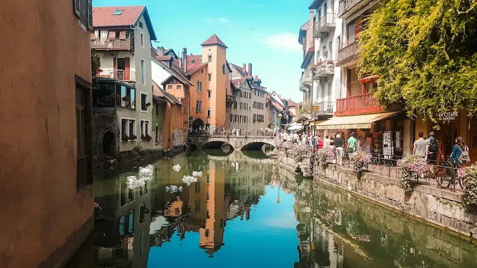
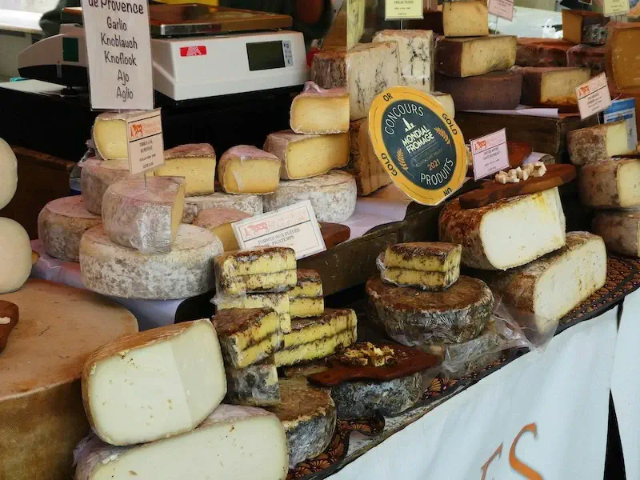
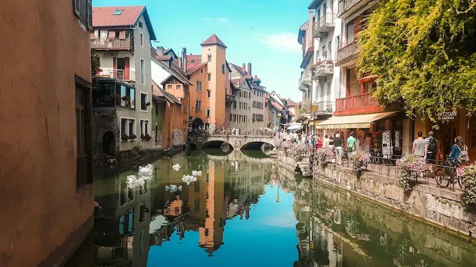

×
Annecy, France, often called the "Venice of the Alps," is a picturesque destination nestled at the foot of the Alps. Its stunning turquoise lake, Lac d'Annecy, is renowned for its clear waters and scenic beauty, perfect for boating, swimming, and leisurely strolls along its shores. The town's charming old quarter, with its cobbled streets, colorful houses, and winding canals, offers a glimpse into its rich history and vibrant culture. Visitors can explore the Château d'Annecy, an imposing castle that provides panoramic views of the area, or enjoy the local cuisine at one of the many quaint cafes and restaurants. With its breathtaking landscapes and serene atmosphere, Annecy is a must-visit for anyone seeking a blend of natural beauty and cultural heritage.
 



 



We’ll be nestled in a stunning lakeside retreat in Annecy, France, where every sunrise over Lake Annecy feels like a scene from a fairytale. The charming streets and vibrant canals are sure to captivate, with the city’s beauty and character making every moment magical.
| Total Cost: $3,500 | |
| What's Included? | What's Not Included? |
|---|---|
| Private hotel room | Airfare |
| All meals & experiences | Airport travel to hotel |